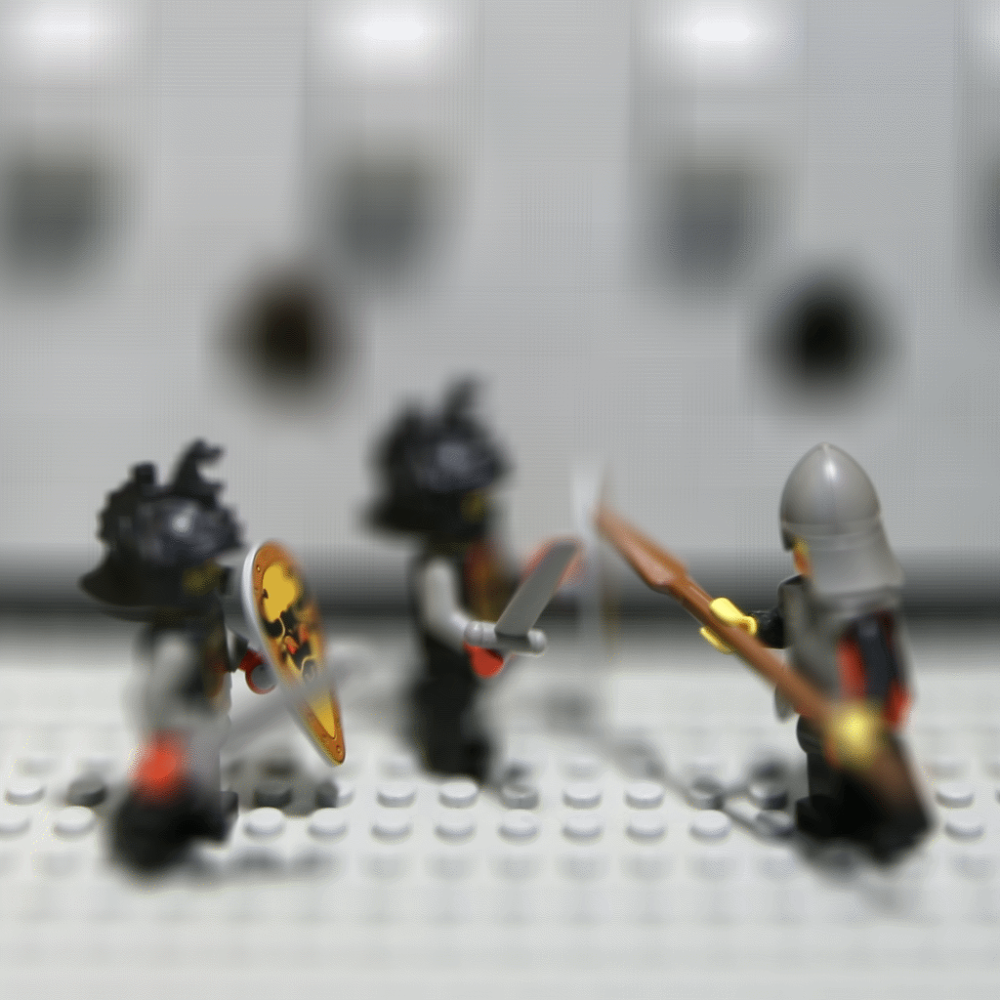

Project 6: Lightfield Camera
By Lucas Karahadian
Overview:
In this project, we examine the possiblities of using a lightfield camera, that is, a camera that captures many images of the same scene from slightly different perspectives. This capture method gives us information about both the color and angle of light rays in the scene we are capturing, allowing us to recombine and reconstruct varients of the scene in question. A subset of the lightfield used in this project is displayed below.
{kind=link}
{kind=link}
{kind=link}
{kind=link}
{kind=link}
{kind=link}
{kind=link}
{kind=link}
{kind=link}
You'll notice that each row has a different vertical perspective, and each column has a different horizontal perspective. The lightfield can thus be represented as a grid of camera angles. This is the defining feature of lightfield images and allows us to do some interesting things.
Depth Refocusing
First up of these interesting things is digital depth refocusing. This is the process of taking a collection of lightfield images and reproducing the same scene but with a very shallow depth of field and a variable focus depth. To begin, we notice that simply by averaging over the full lightfield grid, we can limit the depth of field to a focus point determined during the creation of the lightfield.
-

The default focus distance created by averaging the full lightfield
We can change the focus depth by shifting the images depending on how far displaced from the center of the grid they are.
-

Shifting 1 pixel per image -> Shifting 6 pixels per image
{kind=link}
You'll notice that the focus point moves further back in the image as I increase the amount the images are shifted.
Aperture Adjustment
In the same vein as the digital focusing, we can also readjust our aperture size in post-production. This involves largely the same process as the focusing process detailed above (shifting lightfield images), but is parameterized over how many images from the lightfield we actually use. A larger aperture corresponds to using more images, and a smaller aperture can be achieved by averaging over fewer images. The subset of images we use for this process are always the closest ones to the center of the lightfield grid.
{kind=link}
Acknowledgements:
Website template borrowed from Daniel Tyrrell